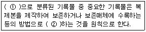
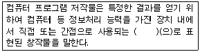
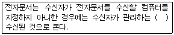
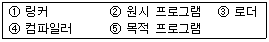

사무자동화산업기사 (2013-06-02 기출문제)
1과목: 사무자동화 시스템
1. MHS(Message Handling System)를 구성하는 3요소가 아닌 것은?
- 사용자
- 유전 에이전트
- 메시지 전송 에이전트
- 보안 정책
(정답률: 72%)

2. 다음 중 1인치에 출력되는 점(Dot)의 수로 인쇄품질을 나타내는 단위는?
- DPI
- CPS
- LPM
- PPM
(정답률: 87%)
3. 인트라넷에 대한 설명으로 옳지 않은 것은?
- 인터넷을 사용하면 별도의 통신망을 구축하지 않더라도 세계 어느 곳에서도 자신이 속한 조직의 정보시스템을 사용할 수 있다.
- 인터넷 기술 등을 이용하여 조직 내부 업무를 통합하는 정보 시스템을 말한다.
- 통신망이나 통신환경의 일종이다.
- 조직 내·외부의 정보를 결합하기 쉽다는 장점이 있다.
(정답률: 53%)
4. 누산기(accumulator)에 대한 설명으로 옳은 것은?
- 연산 결과를 일시적으로 기억하는 장치이다.
- 연산명령의 순서를 기억하는 장치이다.
- 연산부호를 암호화하는 장치이다.
- 연산명령이 주어지면 연산할 준비를 하는 장치이다.
(정답률: 59%)
5. 사무자동화의 목표를 달성하는데 장애요소가 아닌 것은?
- 참여자의 의식 등 사무실 주변의 환경적인 문제
- 사무자동화 기기의 효용성 문제
- 실제 상황에 적합한 시스템 구축의 문제
- 숙련된 사무기기 활용 등 개개인의 문제
(정답률: 38%)
6. 계층형 데이터베이스에 대한 설명으로 옳은 것은?
- 서로 관계있는 레코드들이 그물처럼 얽혀있는 구조로 되어 있다.
- 각 레코드가 트리구조 형식으로 구성된 모형이다.
- 수학적 이론에 기초하여 테이블 형태로 표현된 모형이다.
- 행과 열로 구성된 2차원 구조이다.
(정답률: 76%)
7. 다음 중 COM(Computer Output Microfilm) 시스템의 특징으로 옳지 않은 것은?
- 문서/파일의 작성 및 복사 비용이 저렴하다.
- 대량 복사 및 고속 인쇄가 가능하다.
- 검색시간이 실시간 처리에 적당하다.
- 기록과정이 복잡하고 시간이 많이 걸린다.
(정답률: 32%)
8. 정보화시대의 자동화 분류 중 설명이 가장 바르게 표현된 것은?
- 사무자동화 : POS시스템을 기본으로 한 스토어 컨트롤러로 구성
- 빌딩자동화 : 가전기기운용, 방범방재 및 비디오폰 기능의 구성
- 공장자동화 : 부분적인 자동화, 단위기계의 완전자동화, 생산 라인의 자동화 시스템
- 점포자동화 : 각종 설비를 원격제어, 감시하는 시스템
(정답률: 81%)
9. 다음 중 그룹웨어의 특징이 아닌 것은?
- 지리적으로 떨어져 있는 직원들과 원격회의를 할 수 있다.
- 구성원들 간에 정보 공유를 제공한다.
- 전체조직의 기업 생산성을 향상시킨다.
- 기업과 소비 자간에 전자상거래를 제공한다.
(정답률: 73%)
10. 컴퓨터가 최상의 상태를 유지하고 작동될 수 있도록 하기 위하여 통상 또는 정기적으로 유지보수를 하는 것은?
- System Service
- System Checking
- Maker Service
- Preventive Maintenance
(정답률: 69%)
11. 컴퓨터의 기억장치와 입출력장치의 가장 중요한 차이점이라고 할 수 있는 것은?
- 동작 속도
- 가격(cost)
- 소형, 경량화
- 정보 처리
(정답률: 69%)
12. 통신판매중개자가 자신의 정보처리시스템을 통하여 처리한 기록 중 계약 또는 청약철회 등에 관한 기록의 보존 기준은?
- 6개월
- 1년
- 3년
- 5년
(정답률: 59%)
13. 엑셀 등 스프레드시트에서 수식 자체는 변경하지 않고서 수식 안에 있는 셀에 대한 참조를 변경하려는 경우 가장 적당한 함수는?
- match 함수
- lookup 함수
- row 함수
- indirect 함수
(정답률: 58%)
14. OA 추진방법 중 사무자동화 접근방법이 아닌 것은?
- 전사적 접근 방법
- 부분 전개 접근 방법
- 상향적 접근 방법
- 공통과제 접근 방법
(정답률: 39%)
15. 웹 브라우저 인터넷 익스플로러에서 최근에 방문했던 모든 사이트를 보여주는 기능은?
- 목록보기
- 찾기
- 즐겨찾기
- 검색
(정답률: 73%)
16. 다음 중 데이터베이스 시스템에 대한 설명으로 옳지 않은 것은?
- 하나의 데이터를 여러 분야에서 공통적으로 사용 할 수 있다.
- 파일시스템에 비해 상대적으로 파일수정이 용이하다.
- 데이터 중복이나 분산에 의한 오버헤드(overhead)를 줄일 수 있다.
- 파일이 파괴되었을 때 복구가 빠르고 완벽하다.
(정답률: 60%)
17. 사무자동화에 필요한 학문이나 기술들로 가장 옳게 짝지어진 것은?
- 경제학, 사무기술, 자동화기술, 경영학
- 행동과학, 통신기술, 컴퓨터기술, 시스템과학
- 시스템과학, 공장자동화, 통신기술, 인간공학
- 계량경영학, 예측기법, 언어학, 컴퓨터공학
(정답률: 78%)
18. 다음 중 팩시밀리에서 사진, 문자, 그림 등을 정해진 방식으로 다수의 화소로 분해하는 과정은?
- 반사
- 변조
- 주사
- 동기
(정답률: 72%)
19. 하나 이상의 프로그램 또는 연속되어 있지 않은 저장 공간으로부터 데이터를 모은 다음, 데이터들을 메시지 버퍼에 집어넣고, 특정 수신기나 프로그래밍 인터페이스에 맞도록 그 데이터를 조직화 하거나 미리 정해진 다른 형식으로 변환하는 과정을 일컫는 것은?
- streaming
- converting
- porting
- marshalling
(정답률: 60%)
20. 사무자동화의 환경 개선이 주는 효과로 옳은 것은?
- 사무기기의 고장 시간의 증가
- 정확성 및 생산성의 저하
- 권태감 등의 감소로 작업자의 사기 고취
- 사무자동화 기기 위주의 배려로 작업 능률 향상
(정답률: 68%)
2과목: 사무경영관리 개론
21. 표준작업시간을 정할 때 여유율에 포함되지 않는 것은?
- 신체 여유
- 용달 여유
- 피로 여유
- 작업 여유
(정답률: 56%)
22. 경영정보시스템에 대한 설명으로 옳지 않은 것은?
- 기업의 정보를 저장하고 추출할 수 있는 데이터베이스를 설계 및 구축한다.
- 필요한 데이터를 추출하여 적절한 가공처리를 함으로써 정보화한다.
- 특정 의사결정 문제에 적용하여 보다 개선된 의사 결정을 유도한다.
- 일반사용자들에게 전문가의 전문적인 지식이나 능력을 저렴한 비용으로 제공한다.
(정답률: 69%)
23. 사무실의 주요 기능으로 알맞지 않는 것은?
- 사무 작업이 이루어지는 특정 장소를 말한다.
- 사무실은 집무에 필요한 설비, 기계, 장기 등을 적절히 배치하고 일의 흐름을 정비해야 한다.
- 생리적, 심리적으로 쾌적한 상태에서 일 할 수 있는 공간이 되어야 한다.
- 사무실의 기본 기능에 따라 의사 결정 업무, 데이터 처리업무, 커뮤니케이션 업무로 나눌 수 있다.
(정답률: 57%)
24. 사무관리론의 발전과정이 옳게 나열된 것은?
- 사무작업연구-과학적관리법-사무공정연구-정보처리시스템
- 과학적관리법-사무작업연구-사무공정연구-정보처리시스템
- 과학적관리법-사무공정연구-사무작업연구-정보처리시스템
- 사무작업연구-사무공정연구-과학적관리법-정보처리시스템
(정답률: 30%)
25. 산업보건기준에 관한 규칙상 사업주가 근로자를 안전하게 통행할 수 있도록 통로에 하여야 하는 채광 또는 조명 기준은?
- 50럭스 이상의 채광 또는 조명시설
- 75럭스 이상의 채광 또는 조명시설
- 150럭스 이상의 채광 또는 조명시설
- 300럭스 이상의 채광 또는 조명시설
(정답률: 54%)
26. 사무 간소화 단계에서 사무량 측정 대상으로 알맞지 않은 것은?
- 업무의 구성이 동일한 사무
- 사무량이 적은 잡다한 사무
- 일상적으로 일정한 처리 방법으로 반복되는 사무
- 내용적으로 처리 방법이 균일하여 변동이 별로 없는 사무
(정답률: 83%)
27. 공공기록물 관리에 관한 법률상 다음 ( ) 안에 알맞은 것은?

- ① 영구보존 ② 이중보존
- ① 기밀보존 ② 이중보존
- ① 영구보존 ② 분산보존
- ① 기밀보존 ② 분산보존
(정답률: 48%)
28. 다음은 저작권법상 컴퓨터 프로그램 저작물에 대한 설명이다. ( )안에 알맞은 것은?

- 소프트웨어
- 일련의 지시·명령
- 프로그램
- 언어
(정답률: 65%)
29. 공동저작물의 저작인격권을 행사할 수 있는 경우는?
- 저작자 2/3의 합의
- 저작자 전원의 합의
- 저작자 2/3의 동의
- 저작자 전원의 동의
(정답률: 41%)
30. PERT 기법의 장점으로 옳지 않은 것은?
- 계획공정(network)을 작성하여 분석하므로 간트도표에 비해 작업계획을 수립하기 쉽다.
- 계획공정의 문제점을 명확히 종합적으로 파악할 수 있다.
- 인원이나 특수 설비처럼 제한된 자원을 주공정과 상관없이 개별적으로 배치할 수 있다.
- 관계자 전원이 참가하게 되므로 의사소통이나 정보교환이 용이하다.
(정답률: 47%)
31. 사무조직화의 일반 원칙이라고 할 수 없는 것은?
- 명령계통의 다원화
- 합리적인 책임 할당
- 권한의 위임
- 통솔범위의 적정화
(정답률: 62%)
32. EDI 네트워크 중 직접 방식 네트워크에 해당되는 것은?
- 각거래 상대방들과의 보안관리가 힘들다.
- 흔히 VAN으로 알려져 있다.
- 가장 발전된 형태가 일 대 다중 접속방식이다.
- 송신자와 사용자간의 통신시간대를 조정할 수 있다.
(정답률: 36%)
33. 사무통제를 위한 관리기술 중 사무표준을 사용하여 매일 발생하는 사무를 능률적으로 처리하는 것을 목적으로 하는 관리 활동은?
- 사무품질관리
- 사무공정관리
- 사무외주관리
- 사무원가관리
(정답률: 76%)
34. 사무표준화의 목적 또는 효과와 가장 거리가 먼 것은?
- 직원들을 더욱 철저하게 감독, 통제할 수 있다.
- 사무원들의 공동관심사에 대한 이해가 촉진된다.
- 사무원들을 능력별로 활동할 수 있다.
- 스텝 조직과 라인 조직의 업무 구분을 없앨 수 있다.
(정답률: 52%)
35. 문서의 발신 방법 등에 대한 설명으로 옳지 않은 것은?
- 결재권자가 변경된 경우 다시 발신한다.
- 문서는 정보통신망을 이용하여 발신하는 것을 원칙으로 한다.
- 내용이 중요한 문서는 등기우편이나 그 밖에 발신 사실을 증명할 수 있는 특수한 방법으로 발신하여야 한다.
- 문서는 직접 처리하여야 할 행정기관에 발신한다.
(정답률: 39%)
36. 기안문에서 발의자와 보고자의 표시가 옳게 짝지어진 것은?
- 발의자 : ⊙ 보고자 : ★
- 발의자 : ★ 보고자 : ⊙
- 발의자 : ◎ 보고자 : ●
- 발의자 : ● 보고자 : ◎
(정답률: 71%)
37. 기록물 관리의 원칙으로 공공기관 및 기록물관리기관의 장은 기록물의 생산부터 활용까지의 모든 과정에 걸쳐 관리할 때의 원칙으로 옳은 것은?
- 진본성, 무결성, 신뢰성
- 진본성, 무결성, 보관성
- 진본성, 공개성, 신뢰성
- 영구성, 무결성, 신뢰성
(정답률: 55%)
38. 다음 ( ）안에 알맞은 것은?

- 컴퓨터에 등록하였을 때
- 컴퓨터에 검색되었을 때
- 컴퓨터에 입력되었을 때
- 컴퓨터에 출력되었을 때
(정답률: 75%)
39. 정보관리와 사무관리의 업무 내용에 대한 설명으로 옳지 않은 것은?
- 사무관리는 사무실에서 발생하는 일상 업무를 처리하는 보고서를 작성한다.
- 사무관리는 사무기기를 통해 일상적인 처리의 자동화를 꾀한다.
- 정보관리는 사무관리보다 포괄적인 개념으로 조직 내의 제반 기능과 경영 관리 활동을 폭 넓게 지원한다.
- 정보관리는 컴퓨터에 입력하기 위한 사무절차나 사무처리의 표준화를 행하는 것으로 정보관리의 역할이다.
(정답률: 44%)
40. 정보통신망의 고도화와 안전한 이용 촉진을 위하여 설립한 것은?
- 한국정보보호진흥원
- 한국인터넷진흥원
- 한국정보통신기술협회
- 한국소프트웨어진흥원
(정답률: 54%)
3과목: 프로그래밍 일반
41. 구조적 프로그램의 기본 구조가 아닌 것은?
- 순차 구조
- 관계 구조
- 선택 구조
- 반복 구조
(정답률: 48%)
42. 교착 상태의 해결 방안 중 은행원 알고리즘과 관계되는 것은?
- 예방
- 발견
- 회피
- 회복
(정답률: 67%)
43. C 언어의 기억 클래스 중 저장 클래스를 명시하지 않은 변수는 기본적으로 어떤 변수로 간주되는가?
- STATIC
- REGISTER
- AUTO
- EXTERN
(정답률: 60%)
44. 고급 언어에 대한 설명으로 옳지 않은 것은?
- 번역 과정 없이 실행 가능하다.
- 사람 중심의 언어이다.
- 번역 과정에서의 성능 향상을 도모할 수 있다.
- 프로그래머가 예약어와 동일한 변수명을 사용할 수 없다.
(정답률: 59%)
45. 프로그래밍 언어에서 사용되는 예약어(Reserved Word)에 대한 설명으로 옳지 않은 것은?
- 이식성이 높은 C 언어에는 예약어가 없다.
- 프로그램의 판독성을 증가시킨다.
- 번역 과정에서의 성능 향상을 도모할 수 있다.
- 프로그래머가 예약어와 동일한 변수명을 사용할 수 없다.
(정답률: 58%)
46. 운영체제의 기능으로 옳지 않은 것은?
- 자원의 효율적 관리
- 작업의 연속적 관리를 위한 스케줄 관리
- 여러 사용자 간의 자원 공유
- 원시 프로그램에 대한 기계어 번역
(정답률: 72%)
47. 묵시적 순서제어의 의미로 가장 적합한 것은?
- 프로그램 언어에서 오류에 의해 순서가 바뀌는 것을 묵인하는 것을 의미한다.
- 프로그램 언어에서 변수를 사용하지 않고 순서를 제어함을 의미한다.
- 프로그램 언어에서 괄호나 연산자 등의 수식에 따른 순서 제어 구조를 허용하지 않음을 의미한다.
- 프로그램 언어에서 미리 정해진 순서에 따라 제어가 일어나는 것을 의미한다.
(정답률: 62%)
48. 프로세스의 정의로 거리가 먼 것은?
- 실행중인 프로그램
- 동기적인 행위를 일으키는 단위
- 프로세서가 할당된 개체
- 운영체제가 관리하는 실행 단위
(정답률: 52%)
49. 주석(Comment)의 제거, 상수 정의 치환, 매크로 확장 등 컴파일러가 처리하기 전에 먼저 처리하여 확장된 원시 프로그램을 생성하는 것은?
- Preprocessor
- Linker
- Loader
- Cross compiler
(정답률: 67%)
50. 고급 언어로 작성된 프로그램을 구문분석 하여 파서에 의하여 생성되는 결과물로 각각의 문장을 문법구조에 따라 트리 형태로 구성한 것은?
- 구조 트리
- 어휘 트리
- 파스 트리
- 중간 트리
(정답률: 83%)
51. 언어의 구문 요소 중 주석(Comment)에 대한 설명으로 옳지 않은 것은?
- 프로그램의 판독성을 향상시킨다.
- 대부분의 프로그래밍 언어는 형식은 달라도 주석을 허용한다.
- 프로그램이 동작하는 동안 값이 수시로 변할 수 있는 기억장치의 한 장소를 추상화한 것이다.
- 프로그램 문서화의 중요한 부분이다,
(정답률: 80%)
52. 로더의 기능 중 실행 프로그램을 실행시키기 위해 기억장치 내에 옮겨 놓을 공간을 확보하는 기능은?
- 연결
- 재배치
- 적재
- 할당
(정답률: 82%)
53. 각 페이지마다 계수기나 스택을 두어 현 시점에서 가장 오랫동안 사용하지 않은 페이지를 교체하는 페이지 교체 기법은?
- SCR
- FIFO
- RR
- LRU
(정답률: 74%)
54. C 언어에서 문자형 자료 선언시 사용하는 것은?
- float
- double
- char
- int
(정답률: 63%)
55. C 언어의 함수 중 문자열 입력 함수는?
- getchar( )
- gets( )
- puts( )
- putchar( )
(정답률: 59%)
56. 수식 표기법 중 연산 기호는 두 피연산자 사이에 표현되고 산술연산, 논리연산, 비교연산 등에 주로 사용되며, 이항 연산자에 적합한 표기법은?
- 최후(Last-fix) 표기법
- 전위(Prefix) 표기법
- 중위(Infix) 표기법
- 후위(Postfix) 표기법
(정답률: 84%)
57. C 언어에서 사용하는 이스케이프 시퀀스에 대한 의미가 옳지 않은 것은?
- \r : form feed
- \n : new line
- \t : tab
- \b : backspace
(정답률: 56%)
58. 프로그래밍 언어에서 수명 시간 동안 고정된 하나의 값과 이름을 가진 자료로서 프로그램이 동작하는 동안 값이 절대로 바뀌지 않는 것을 의미하는 것은?
- 상수
- 변수
- 예약어
- 주석
(정답률: 56%)
59. 어휘 분석의 주된 역할은 원시 프로그램을 하나의 긴 스트링으로 보고 원시 프로그램을 문자 단위로 스캐닝 하여 문법적으로 의미 있는 일련의 문자들로 분할해 내는 것이다. 이때 분할된 문법적인 단위를 무엇 이라고 하는가?
- 오토마타
- BNF
- 토큰
- 모듈
(정답률: 60%)
60. 프로그램 수행 순서가 옳은 것은?

- ②→④→⑤→①→③
- ⑤→④→②→①→③
- ②→③→④→①→⑤
- ④→①→③→②→⑤
(정답률: 85%)
4과목: 정보통신 개론
61. 통신제어장치에 대한 설명으로 가장 옳은 것은?
- 데이터의 입출력을 담당한다.
- 시스템 상호간을 접속하는 통신로이다.
- 아날로그 신호를 디지털 신호로 변환한다.
- 데이터 전송 시 필요한 제어신호를 송수신한다.
(정답률: 73%)
62. 양방향으로 데이터 전송이 가능하나, 한 순간에는 한쪽 방향으로만 전송이 이루어지는 방식은?
- 단방향방식
- 반이중방식
- 양방향방식
- 전이중방식
(정답률: 75%)
63. HDLC 전송프레임에서 시작 플래그 다음에 전송되는 필드는?
- 제어부
- 주소부
- 정보부
- FCS
(정답률: 70%)
64. 비동기식 전송의 특성으로 맞는 것은?
- 문자 위주 비트와 비트 위주로 나누어진다.
- 송신자와 수신자는 동기화의 시간을 설정하고 유지한다.
- 대용량, 고속의 데이터 전송에 주로 쓰인다.
- 한 번에 한 문자씩 전송한다.
(정답률: 56%)
65. OSI-7계층 중 응용간의 대화제어(dialogue control)를 담당하는 것은?
- Session Layer
- Application Layer
- Presentation Layer
- Data Link Layer
(정답률: 40%)
66. 매체 접근방식에 의한 LAN의 분류에 해당되지 않는 것은?
- 이더넷
- 토큰 링
- 토큰 버스
- 캐리어 밴드
(정답률: 77%)
67. 코덱(CODEC)에 대한 설명으로 옳은 것은?
- 데이터통신망 관리를 위한 디지털 장치이다.
- 데이터통신망에 의해 정보를 제어하는 장치이다.
- 데이터를 모아 일괄로 처리하는 장치이다.
- 아날로그 신호를 데이터 전송로에 맞게 디지털 신호로 바꾸어 전송해 주는 장치이다.
(정답률: 57%)
68. 통신회선의 채널용량을 증가시키기 위한 방법으로 적합하지 않은 것은?
- 신호 세력을 높인다.
- 잡음 세력을 줄인다.
- 데이터 오류를 줄인다.
- 채녈 대역폭을 증가시킨다.
(정답률: 42%)
69. 데이터 통신시스템의 구성에서 데이터 전송계에 해당하지 않는 것은?
- 단말장치(DTE)
- 데이터 전송회선
- 통신 제어장치
- 데이터 처리장치
(정답률: 62%)
70. 두 개의 채널사이에 보호대역(guard band)을 사용하여 인접한 채널간의 간섭을 막는 다중화방식은?
- 시분할 다중화방식
- 주파수분할 다중화방식
- 코드분할 다중화방식
- 공간분할 다중화방식
(정답률: 73%)
71. FDDI에 대한 설명으로 틀린 것은?
- FDDI는 한 개의 링으로 구성된다.
- 물리계층에 해당하는 프로토콜은 PHY, PMD가 있다.
- 토큰 매체 액세스 제어방법으로 작동한다.
- 매체로 광섬유 케이블을 사용한다.
(정답률: 59%)
72. 통신망 구성형태 중 중앙집중식 구조를 가지고 포인트 투 포인트 링크로 연결하는 방식은?
- 성형
- 망형
- 트리형
- 링형
(정답률: 79%)
73. 디지털 변조에서 디지털 데이터를 아날로그 신호로 변환시키는 방식으로 틀린 것은?
- ASK
- PCM
- FSK
- PSK
(정답률: 68%)
74. 비동기식 전송 시 포함되는 내용이 아닌 것은?
- 시작 비트
- 데이터
- 플래그 비트
- 정지 비트
(정답률: 59%)
75. HDLC(High-level Data Link Control) 동작모드에 해당하지 않는 것은?
- 정규 응답 모드(NRM)
- 비동기 응답 모드(ARM)
- 비동기 균형 모드(ABM)
- 동기 균형 모드(SBM)
(정답률: 59%)
76. 비패킷형 단말이 패킷교환망을 이용할 수 있도록 패킷의 조립과 분해 기능을 제공해 주는 것은?
- DSU
- MODEM
- PAD
- CCU
(정답률: 74%)
77. 패킷교환 방식에 대한 설명으로 틀린 것은?
- 음성 전송과 같은 실시간 통신에 적합하다.
- 저장-전달 방식을 사용한다.
- 전송할 수 있는 패킷의 길이는 제한되어 있다.
- 데이터 그램과 가상회선 방식으로 구분된다.
(정답률: 54%)
78. 오류를 제어할 때 수신측에서 오류의 검출기능과 정정기능을 동시에 갖는 부호는?
- Hamming Code
- Parity Code
- ASCⅡ Code
- EBCDIC Code
(정답률: 56%)
79. 정보의 전달을 위한 단계가 바르게 나열된 것은?
- 링크확립-회로연결-메시지전달-회로절단-링크절단
- 링크확립-회로연결-메시지전달-링크절단-회로절단
- 회로연결-링크확립-메시지전달-회로절단-링크절단
- 회로연결-링크확립-메시지전달-링크절단-회로절단
(정답률: 75%)
80. 프로토콜 구성요소에 해당하지 않는 것은?
- 구문(Syntax)
- 의미(semantics)
- 파라미터(parameter)
- 순서(timing)
(정답률: 81%)